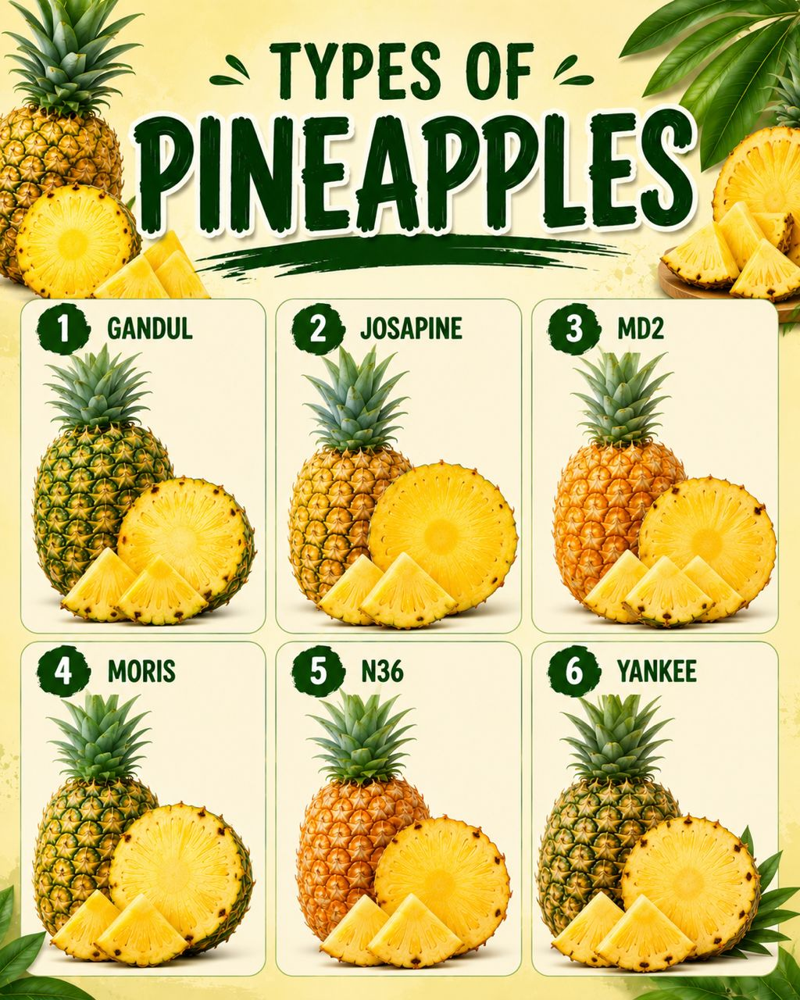

HISTORY
Pineapple became well known in Malaysia after it was introduced to Southeast Asia by the Spanish and Portuguese during the 16th century. It grew well in Malaysia’s hot and wet tropical climate, especially in states like Johor, Sarawak, and Sabah. Over time, local farmers started growing pineapple on a larger scale because it is easy to plant and has good demand for food and export. Malaysia also developed pineapple canning industries, making products like canned pineapple and juice for international trade

TYPES OF PINEAPPLE
- Gandus
- Josapine
- MD2
- Moris
- N36
- Yankee
HEALTH BENEFITS
- Rich in Vitamin C
- Improves digestion
- Good for digestion
- Low in calories
HOW TO GROW PINEAPPLE
1.Cut the Crown
-Remove the leafy top (crown) from a healthy pineapple.
2. Prepare the Crown
-Remove a few lower leaves and let it dry for 1–2 days.
3.Plant the Crown
-Plant the crown in well-drained soil and place it in a sunny area.
4.Care for the Plant
-Water regularly and keep the soil slightly moist.
5.Harvest the Pineapple
-Harvest the pineapple when it is fully grown and ripe.
FUN FACTS
- Long-living plant - A pineapple plant can live up to 50 years and keep producing fruit.
- Grows from crown - A new pineapple plant can grow from the top of a pineapple
- Heavy record fruit - The largest pineapple ever recorded weighed about 8.28 kg.
- Scientific name - Its scientific name is Ananas comosus.